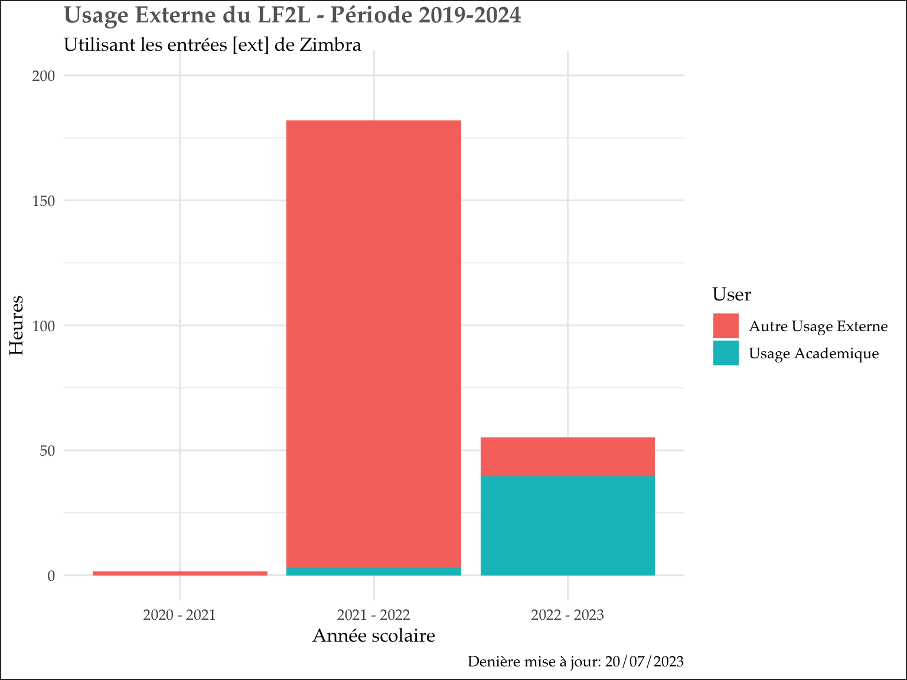

Usage pédagogique du LF2L
Les graphiques suivant montrent approximativement l’usage du LF2L dans le cadre pédagogique et la Recherche.
A noter que le LF2L est ouvert environ \(1840 / an\), à partir du calcul suivant : 40h / semaine X 46 semaines sur la base d’une ouverture 9h-12h30 et 13h30-18h, sachant que nous ouvrons avant 9h et que c’est hors événements spéciaux + NYBI (19h - Minuit tous les jeudis) soit 7 360 pour 4 ans (2015-2018). et sachant que deux, voire trois activités pédagogiques peuvent avoir lieu en même temps : par ex - un atelier côté espace collaboratif + un cours côté matérialsiation et un groupe projet 2AI.
Nous n’avons ici pas référencé tous les usages de autres composantes ou services centraux de l’UL ou de l’ICEEL. En effet ces données sont trés éparses (une visite ou un ateliers de temps en temps) - estimation : 30 à 40 \(h / an\)
Calendrier ZIMBRA
L’analyse est fait à partir du planning Zimbra de l’ENT de l’UL dont la nomenclature ci-dessous est prise en compte.
- Sujet : [catégorie usager] [type usager] [usage] Titre descriptif
- Endroit : [travers] [espace]
- Participants : [organisateur] [réfèrent LF2L] [liste d’invités]
- Date : [jj/mm/aaaa]
- Heure : Début et fin de réservation / réunion / évènements
- Description : [infos complémentaires]
Convention nommage : 1. [catégorie usager] : INT (interne) ou EXT (externe)
- [interne] [type usager] : ERPI ou ENSGSI
- [externe] [type usager] :
- ACA (académique)
- IND (industriel)
- ASSO (associatif)
- [usage] :
- REU (réunion)
- VIS (visite)
- FOR (formation)
- FORMU (formation mutualisée)
- PRO (prototypage)
- EXP (expérimentation)
- CRE (créativité)
- SEM (séminaire)
- AUT (autre)
- [travée] :
- COL (collaboratif)
- MAT (matérialisation)
- LF2L
1.[collaboratif] [espace] : IMM (immersive), VIS (visio) ou COL (collaborative)
- [organisateur] : email de la personne qui organise et demande la réservation
- [réfèrent LF2L] : email du réfèrent LF2L responsable d’accueillir la réunion
- [liste d’invités] : liste d’invités
- [infos complémentaires] : (optionnel) texte descriptive
Résultats
Analyse total des Activites selon ZIMBRA par anné
Usage Interne et Externe 2020 - 2023
Usage totale
Usage Interne
En utilisant la codification seulement [int], on peut identifier la proportion ENSGSI, ERPI et autre
Usage Externe
Codification [ent], avec type d’usage ACA (académique), IND (industriel) et ASSO (associatif).

Specification de certains cours
Certains cours sont possible des les repèrer dans le calendirer. Nottament CI3,CI6, Master IDEAS, IUVTT, AIU. Cepandant, il manque un travail sur le calendrier pour ameliorer la lisibilité d’une grand partie de “l’Autre Usage Interne”